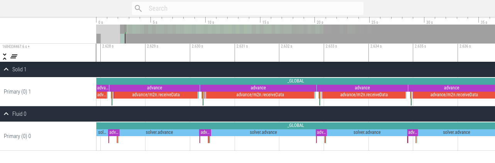
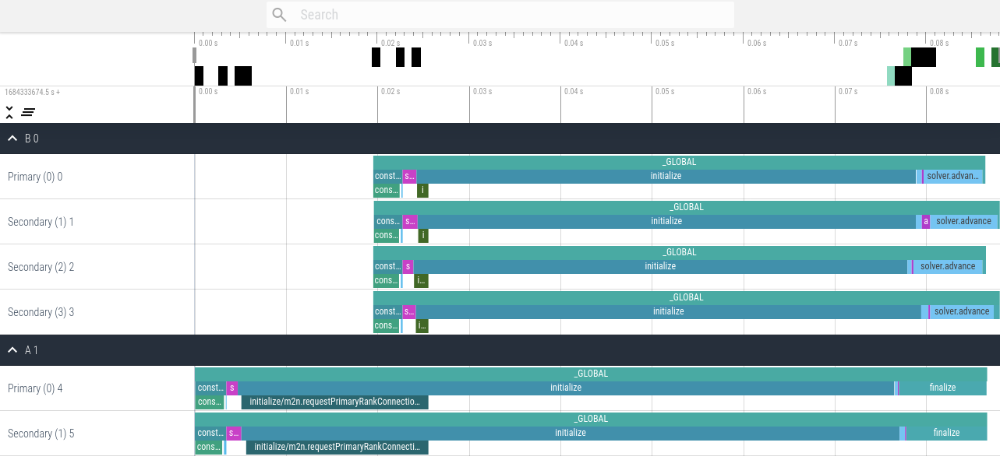
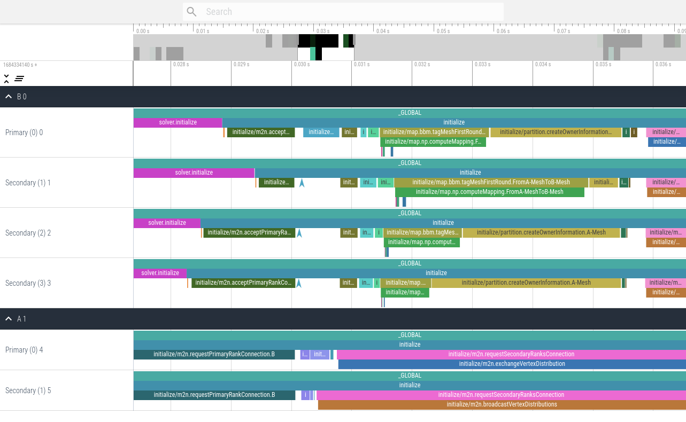

Introduction
preCICE uses an internal profiling framework to measure code sections inside and between API calls of the library. Existing external frameworks cannot cope with the complexity of the multi-executable setup of preCICE. To understand the performance of a coupled run, it is necessary to look at the interplay of all coupled participants.
These named code sections are called events and each event generates records during runtime.
Each rank of each participant gathers local records and writes them to a JSON file. To store these JSON files, preCICE creates a directory called precice-profiling in the current working directory of each participant.
All these files of all participants then need to be post-processed and merged to a single file using the merge command of the precice-profiling python script.
You can then use other commands of the precice-profiling script to analyze and export the profiling data.
The script is installed in the binary directory and can also be found in the source repo in the folder tooling/profiling/.
Fundamental Events
Some events are useful for everyone, while others are only useful for developers. To keep this feature as useful as possible, we pre-selected a set of events that we deem fundamental. These include the main preCICE API functions and the time spent between these calls inside the solvers. Fundamental events should give you an insight in the overhead of preCICE as well as load imbalance between ranks etc.
Fundamental events are:
_GLOBALtime spent from the initialization of the events framework to the finalization. Starts in the construction of the participant and ends in finalize or the destructor.constructiontime spent in construction of the Participant, including configuration and setting up the intra-communication of each participant.solver.initializetime spent in the solver untilinitialize()is called. This normally includes setting meshes, defining initial data and preparing the solver.initialize()time spent in preCICEinitialize(). This includes establishing communication between participants, mesh and data transfer, as well as mapping computation.solver.advancetime spent in the solver betweenadvance()calls, including the time betweeninitialize()and the firstadvance()call.advance()time spent in preCICEadvance(). This includes data mapping, data transfer, acceleration.
Measuring Blocking Operations
Some parts of preCICE involve communication, which cannot be interleaved efficiently with other computations. Measuring the runtime of such operations can be tricky, as the time spent waiting should not be misinterpreted. Synchronizing all ranks using a barrier solves the issue, but has an impact on performance.
To keep this waiting component of the overall measurement to a minimum without affecting performance, we added a configuration option to toggle the synchonization before required events.
Use the synchronize attribute to enable such synchronization if you need it.
<precice-configuration>
<profiling synchronize="true" />
</precice-configuration>
Configuration
You can configure the profiling with the <profiling/> tag located inside <precice-configuration>.
The default settings enable profiling of fundamental events and write the event files the working directory of each solver.
The full configuration consists of:
modeeitheroff,fundamental(default), oralldirectorylocation to create theprecice-profilingfolder in and write the profiling files to- the flush frequency
flush-every:0means only at the end of the simulation,n>0means to flush every n records
Examples
To turn the profiling off:
<precice-configuration>
<profiling mode="off" />
</precice-configuration>
To write the files of all participants into a common directory (often .. works too):
<precice-configuration>
<profiling directory="/path/to/dir" />
</precice-configuration>
To prevent any write operations of the filesystem until the end of the simulation:
<precice-configuration>
<profiling flush-every="0" />
</precice-configuration>
To profile blocking operations:
<precice-configuration>
<profiling mode="all" synchronize="true" />
</precice-configuration>
Post-processing workflow
The general workflow looks as follows:
- Run the simulation
- Merge the event files
- Analyze each participant executing a mapping or computing acceleration
- Analyze each participant to check for load-imbalance between ranks
- Visualize the simulation to check for load-imbalance between participants
The rest of the section will go through the process of analyzing participants step by step.
Merging Event Files
After the simulation completes, you can find precice-profiling folders in the configured location, defaulting to the working directory of each participant.
An example could look like this:
.
├── A
│ └── precice-profiling
│ └── A-0-1.json
├── B
│ └── precice-profiling
│ └── B-0-1.json
└── precice-config.xml
where the naming pattern is participant-rank-file_number. To find and merge these files run:
$ ls
A
B
$ precice-profiling merge A B
Searching A : found 1 files in A/precice-profiling
Searching B : found 1 files in B/precice-profiling
Found 2 unique event files
Found a single run for participant B
Found a single run for participant A
Loading event files
Globalizing event names
Grouping events
Aligning B (-179us) with A
Writing to profiling.json
$ ls
A
B
profiling.json
The merge command searches passed directories for the event files. You can also pass individual files if you are not interested in all ranks.
The merge command is written in pure Python, without external dependencies, to make it easy to use on clusters.
After you run precice-profiling merge, you end up with a single file, which can be additionally compressed and transferred to another machine.
This is especially handy for very large and/or long simulations on clusters or supercomputers.
The result of this step is a single profiling.json file.
Visualizing the simulation
You can run precice-profiling trace to export the profiling.json file as trace.json in the trace events format.
$ precice-profiling trace
Reading profiling file profiling.json
Writing to trace.json
This trace format can then be visualized using the following tools:
- ui.perfetto.dev
- profiler.firefox.com
- speedscope.app
chrome://tracing/in Chromium browsers (see full list)
These visualization tools cannot handle large runs though.
There are two options to reduce the trace size:
You can select the first N ranks using -l N and you can pick specific ranks using -r RANK ...
These two selectors are combined.
As an example, to select the first 3 ranks and in addition ranks 10 and 200:
$ precice-profiling trace -l 3 -r 10 200
Reading profiling file profiling.json
Selected ranks: 0,1,2,10,200
Writing to trace.json
An example trace visualization using ui.perfetto.dev of the elastic tube 1d tutorial looks as follows.
Note the alternating executions of the solver due to the serial coupling scheme.

An example trace visualization using ui.perfetto.dev of a parallel ASTE run on two and four ranks looks as follows.
This first version contains only fundamental events, which is the default profiling setting.

This second version contains all events using the configuration <profiling mode="all" />.

Analyzing participants
You can run precice-profiling analyze NAME to analyze the participant NAME and display a table of recorded events.
The output differs for serial and parallel participants.
The output for serial solvers contains a table displaying the name of the event, followed by the sum, count, mean, min, and max runtime.
$ precice-profiling analyze Fluid
Reading profiling file profiling.json
Output timing are in us.
event | sum count mean min max
_GLOBAL | 34125973.0 1 34125973.0 34125973.0 34125973.0
advance | 32893268.0 793 41479.530895334174 116.0 45942.0
construction | 59470.0 1 59470.0 59470.0 59470.0
construction/configure | 59265.0 1 59265.0 59265.0 59265.0
finalize | 42664.0 1 42664.0 42664.0 42664.0
initialize | 181787.0 1 181787.0 181787.0 181787.0
initialize/m2n.requestPrimaryRankConnection.Solid | 266.0 1 266.0 266.0 266.0
solver.advance | 947727.0 794 1193.610831234257 550.0 15470.0
solver.initialize | 29.0 1 29.0 29.0 29.0
The output for parallel solvers is slightly more complex. After the name of the event, the table contains three blocks, each containing the sum, count, mean, min, and max runtime for a specific rank.
- The first block displays the primary rank (0).
- The second block displays the secondary rank which spent the least total time in the event given via
--event EVENT. By default,--event advanceis used. - The third block displays the secondary rank which spent the most total time in the event given via
--event EVENT. By default,--event advanceis used.
$ precice-profiling analyze --event advance B
Reading profiling file profiling.json
Output timing are in us.
Selection contains the primary rank 0, the cheapest secondary rank 2, and the most expensive secondary rank 1.
event | R0:sum R0:count R0:mean R0:min R0:max | R2:sum R2:count R2:mean R2:min R2:max | R1:sum R1:count R1:mean R1:min R1:max
_GLOBAL | 66888.0 1 66888.0 66888.0 66888.0 | 66953.0 1 66953.0 66953.0 66953.0 | 68462.0 1 68462.0 68462.0 68462.0
advance | 170.0 1 170.0 170.0 170.0 | 154.0 1 154.0 154.0 154.0 | 905.0 1 905.0 905.0 905.0
construction | 3179.0 1 3179.0 3179.0 3179.0 | 3171.0 1 3171.0 3171.0 3171.0 | 3132.0 1 3132.0 3132.0 3132.0
construction/com.initializeIntraCom | 130.0 1 130.0 130.0 130.0 | 157.0 1 157.0 157.0 157.0 | 153.0 1 153.0 153.0 153.0
construction/configure | 2863.0 1 2863.0 2863.0 2863.0 | 2828.0 1 2828.0 2828.0 2828.0 | 2786.0 1 2786.0 2786.0 2786.0
finalize | 291.0 1 291.0 291.0 291.0 | 365.0 1 365.0 365.0 365.0 | 251.0 1 251.0 251.0 251.0
initialize | 54588.0 1 54588.0 54588.0 54588.0 | 54008.0 1 54008.0 54008.0 54008.0 | 54450.0 1 54450.0 54450.0 54450.0
initialize/m2n.acceptPrimaryRankConnection.A | 1227.0 1 1227.0 1227.0 1227.0 | 1569.0 1 1569.0 1569.0 1569.0 | 1123.0 1 1123.0 1123.0 1123.0
solver.advance | 7063.0 2 3531.5 621.0 6442.0 | 8018.0 2 4009.0 454.0 7564.0 | 8016.0 2 4008.0 635.0 7381.0
solver.initialize | 1557.0 1 1557.0 1557.0 1557.0 | 1201.0 1 1201.0 1201.0 1201.0 | 1678.0 1 1678.0 1678.0 1678.0
Processing in other software
You can run precice-profiling export to export the profiling.json file as profiling.csv.
This contains CSV data including all individual events from all participants and ranks.
It also contains additional data entries attached to events.
The header of the result CSV is participant,rank,size,event,timestamp,duration,data.
$ precice-profiling export
Reading profiling file profiling.json
Writing to profiling.csv
Example of loading the csv into pandas and extracting rank 0 of participant A:
import pandas
df = pandas.read_csv("profiling.csv")
selection = df[ (df["participant"] == "A") & (df["rank"] == 0) ]